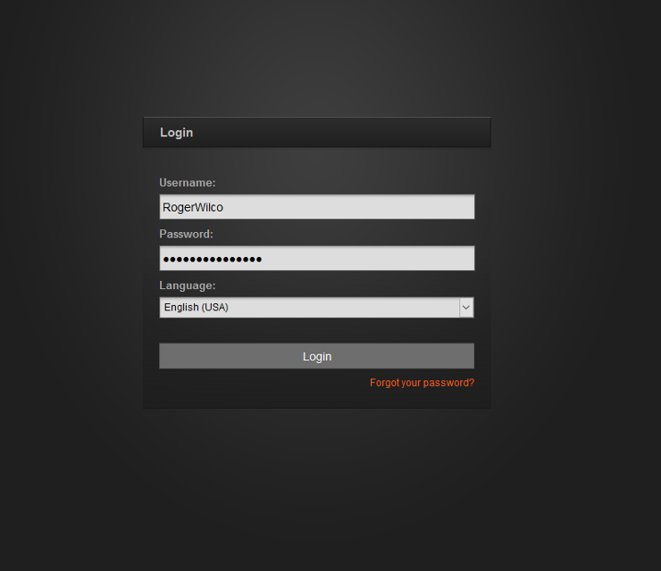
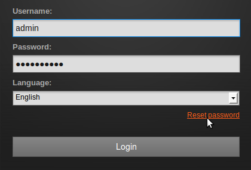
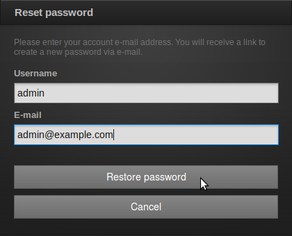
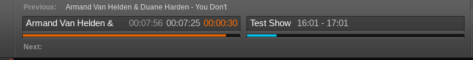
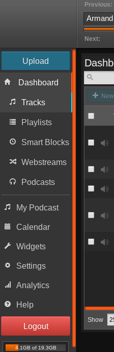
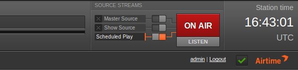
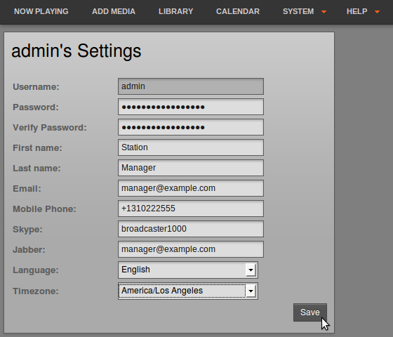
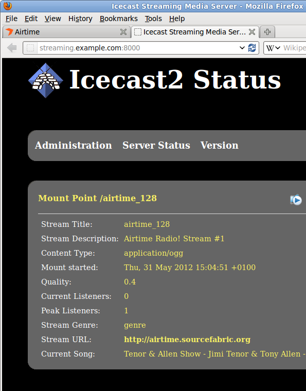

Getting Started
If the server is only being used for LibreTime and has a web browser installed, you can access the administration interface directly on that server by opening the address:
http://localhost/If you have set up LibreTime so that it can be accessed from other computers, you would use a domain name instead. For example:
https://libretime.example.com/You can log in for the first time with the user name admin and the password admin. Your browser should automatically focus on the Username field.

You will see a link Reset password below the password field, which enables users to obtain a password reminder by email. You will need to have a mailserver configured to work with PHP for this to work. There is an issue open to add documentation for this (#724).

The E-mail address you enter must match the address stored in the database for your Username.

The Master Panel
The Master Panel is present at the top of every page of the LibreTime interface. On the left hand side, the Master Panel displays the details of the Previous file played out, the current file playing (with an orange progress bar and time elapsed/time remaining), and the details of the Next file due to play. It also displays the name and scheduled time of the current show, with a blue progress bar.

Beneath this side of the Master Panel is the main navigation menu. We'll be looking at the contents of these menus in the following chapters of this book.

On the right hand side of the Master Panel are the switches for the Source Streams, which enable you to switch from scheduled play to remote live sources, and back. (See the chapter Stream settings for details of this feature). The On Air indicator turns from dark grey to red whenever audio is being played out. Underneath this indicator is a Listen button, which opens a pop-up player that can be used to audition the available playout streams.
There is also a clock indicating the Station time and time zone. Beneath the clock and just to the left, the name of the user currently logged in is displayed, and there is the link for you to Logout.

Clicking the username link opens a page in which you can update your LibreTime password, contact details, language and time zone preferences. Click the Save button once you have made the changes that you require.

Checking an Icecast server
If you have installed an Icecast streaming media server, you can check that Icecast is running by opening its default server port of 8000 in your web browser. For example, on the server itself, you can use:
http://localhost:8000or from another machine, using the domain name of the Icecast server:
http://streaming.example.com:8000You should see the Icecast status page, with details of any connections that your LibreTime server has made to this Icecast server. If you have only just installed LibreTime, there may not be any media playing out yet.

Reverse Proxy Connections
In some deployments, the LibreTime server is deployed behind a reverse proxy, for example in containerization use-cases such as Docker and LXC. LibreTime makes extensive use of its API for some site functionality, which causes Cross-Origin Resource Sharing (CORS) to occur. By default, CORS requests are blocked by your browser and the origins need to be added to the Allowed CORS URLs block in General Settings. These origins should include any domains that will be used externally to connect to your reverse proxy that you want handled by LibreTime.